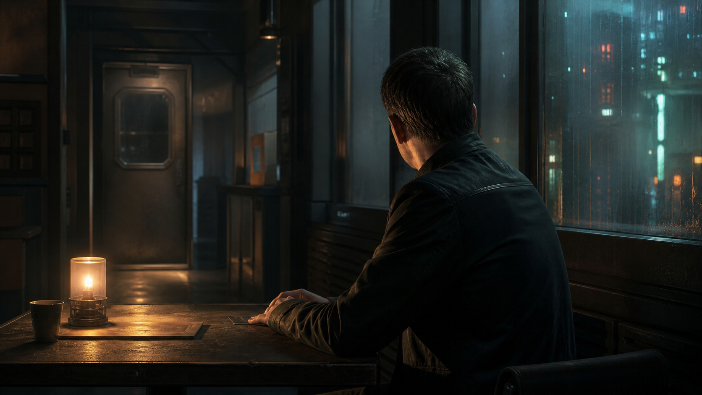

Ambientado en Oasis (tesela recién despertada) — módulo independiente, colgado del DLC Oasis. Continuación narrativa opcional de "La Trampilla Vigilada" — jugable sin ella. Estado: BORRADOR, pendiente de playtest.
«Las opciones de Primus no son solo matarlo o no. Eso es, precisamente, lo que las hace más difíciles de ver venir.»

Premisa: el mando Federal Marcus ha atado cabos. Su "asesor civil" recibe orientación de alguien que no figura en ninguna cadena de mando oficial, y las órdenes que Marcus lleva meses cumpliendo empiezan a encajar en un patrón que no le gusta. Antes de que Primus decida qué hacer con él, Marcus tiene que decidir qué hacer con lo que sabe — y no quiere hacerlo solo.
Duración: una sesión de 4-6 horas. Periodo: antes del despertar. Perspectiva: nativos (Federal o próximos a Marcus) o mixta.
Qué saben los PJ: que Marcus les pide ayuda con algo que no puede llevar por los canales normales — sin necesitar haber jugado La Trampilla Vigilada para que esto tenga sentido; si se jugó, Marcus es exactamente el mismo Federal, con la misma duda ya sembrada.
Verdad del Narrador: el Siervo de Primus ya ha notado la sospecha de Marcus. No responde con violencia como primera opción — sigue, en orden, las vías que su institución prefiere: vigilancia discreta, después desinformación con una explicación alternativa plausible, después reasignación silenciosa, y solo en circunstancias extremas, algo más definitivo. El módulo da al grupo una ventana real para influir en qué escalón se alcanza.
Objetivo inmediato: ayudar a Marcus a decidir qué hacer con lo que sabe, y evitar que la respuesta de Primus llegue más lejos de lo necesario.
Pregunta de fondo: ¿qué le debe un profesional leal a una institución que resulta no ser exactamente lo que él creía servir?
Si nadie interviene: Primus gestiona a Marcus por su cuenta, casi siempre mediante reasignación silenciosa — la opción menos dramática, y la que Marcus nunca llega a entender del todo.
Sin cuenta atrás de horas — escalada de respuesta, no reloj: la presión de este módulo no es una hora exacta, es un nivel de respuesta de Primus que sube según lo que hagan los PJ. Usa esta escalada, tomada directamente de cómo actúa Primus en el propio DLC (Punto 7):
Sube un escalón cuando los PJ actúan de forma ruidosa o exponen la investigación sin cuidado; puede bajar o congelarse si actúan con discreción real. No es automático ni mecánico — es una guía de intensidad narrativa, no una tabla de tiradas.
Las tres partes, en una frase:
- Marcus → decidir qué hacer con lo que sabe sin perder su criterio ni, si puede evitarlo, su carrera.
- El Siervo de Primus → resolver esto de la forma menos dramática posible, sin dejar un cadáver que explicar.
- Los PJ → ayudar a Marcus a decidir bien, sabiendo que cualquier error de discreción sube la escalada.
No hay villano. El Siervo de Primus no quiere hacerle daño a Marcus — quiere que el problema desaparezca de la forma más limpia posible, y matar a alguien es, para Primus, un fracaso operativo, no una solución preferida.
Marcus lleva semanas notando que las "recomendaciones" de su asesor civil siempre llegan un paso antes de que hagan falta — demasiado a tiempo para ser casualidad. Empezó a llevar un registro discreto de coincidencias: órdenes que no venían de ningún mando identificable, casos que se cerraban sin explicación, líneas de investigación que su asesor "sugería" evitar sin nunca justificarlo. No tiene pruebas concluyentes de que su asesor sea de Primus —no conoce la palabra "Primus" en absoluto— pero sabe que algo no encaja.
El Siervo de Primus ya lo ha notado. Prefiere, con mucho, resolverlo sin dejar un cadáver que explicar — y empezará por la vigilancia discreta, escalando solo si Marcus (o quien le ayude) se vuelve ruidoso o expone la investigación sin cuidado.
Pueden llegar a saber todo lo que sabe Marcus. Lo que no deben poder resolver desde el principio es si Primus interviene con violencia por defecto — no lo hace, y el módulo no debe sugerir lo contrario hasta que la propia escalada llegue, si llega, a su último escalón.
Tensión política e institucional, no acción. El peligro es la escalada silenciosa, no una emboscada armada. Marcus debe sentirse como un profesional real enfrentado a algo que no tiene manual, no como un investigador de novela negra.
Aspecto: ya descrito en el DLC — uniformado, disciplinado, precedido por el sonido de sus propias botas antes de que se le vea.
Ficha compartida con el resto del DLC: F35/A35/P40/V40 | PV 16/16/16 | Bld 3 | Armas cortas 50% | Daño 6 | Liderazgo/Mando 45%
Aspecto: amable, informado, siempre presente sin explicar del todo por qué.
Ficha compartida con el resto del DLC: F20/A30/P50/V55 | PV 12/12/12 | Bld 0 | Investigación 55% | Social 50% | Voluntad alta
PNJ funcionales (1-2 profesiones cada uno). F30/A35/P30/V30 | PV 14/14/14 | Bld 3 | Armas cortas 45% (no letal por defecto) | Daño 5
Comisaría o base de la unidad de Marcus: rutina Federal normal, donde cualquier movimiento fuera de lo habitual puede notarse.
Un lugar privado, fuera de canales oficiales: donde Marcus prefiere hablar con los PJ sin que su asesor esté cerca.
Archivo de registros: donde se puede confirmar (o no) el patrón de órdenes irregulares.
Cada escena está pensada para dirigirse sola, sin buscar en otra parte del documento durante el juego — las fichas relevantes están repetidas dentro.
Atmósfera:
Marcus elige un sitio sin uniforme de por medio para hablar. Antes de decir nada, mira dos veces hacia la puerta — un gesto que un hombre tan disciplinado no debería necesitar.
Qué está ocurriendo: Marcus busca a los PJ, fuera de su cadena de mando, para compartir lo que ha notado.
PNJ presentes, con su intención inmediata:
- Marcus — nervioso a su manera contenida, necesita ayuda que no pueda pedir oficialmente (Aspecto y ficha: ver Reparto).
Qué saben / qué dicen: Marcus explica el patrón de "recomendaciones" demasiado oportunas de su asesor, sin saber todavía qué es exactamente lo que ha descubierto.
Tiradas posibles (ninguna obligatoria):
- Social o Empatía (ganarse su confianza total, no solo la inicial): éxito → comparte también los detalles más concretos de su registro privado; fallo → comparte solo lo general, reservándose el resto hasta confiar más.
Si los PJ no hacen nada: Marcus busca ayuda en otra parte, con más riesgo de exponerse sin apoyo adecuado.
Cómo termina: el grupo acepta ayudar a Marcus y conoce el patrón que él ha notado.
Después: el nivel de confianza ganado aquí condiciona cuánto material aporta Marcus en la Escena 2.
«No sé quién da las órdenes de verdad. Solo sé que siempre llegan justo antes de que las necesite. Eso no es suerte. Eso es vigilancia.»
Atmósfera:
Los archivos oficiales no mienten, pero tampoco cuentan toda la verdad. A veces basta con notar qué es lo que nunca aparece escrito.
Qué está ocurriendo: el grupo investiga los registros y patrones para confirmar (o matizar) la sospecha de Marcus, con cuidado de no levantar sospechas propias.
PNJ presentes, con su intención inmediata:
- Rensa o Coy, si se les involucra — leales a Marcus, curiosos pero sin saber el motivo real de la investigación.
Qué saben / qué dicen: los registros muestran, con suficiente análisis, un patrón real de decisiones "sugeridas" que evitan sistemáticamente ciertas líneas de investigación.
Tiradas posibles:
- Investigación (analizar los registros de órdenes y casos cerrados): éxito → confirmas el patrón con detalle suficiente para ser tomado en serio; fallo → confirmas que algo es raro, sin poder probarlo todavía.
- Sigilo o Social (investigar sin levantar sospechas dentro de la propia comisaría): éxito → nadie nota nada fuera de lo normal; fallo → sube un escalón en la escalada de Primus (ver Panel del Narrador).
Si los PJ no hacen nada: Marcus reúne lo que puede por su cuenta, más lento y con más riesgo.
Cómo termina: el grupo tiene pruebas concretas (o casi) del patrón, y decide cómo seguir.
Después: cómo de discretos fueron aquí determina en qué escalón empieza la Escena 3.
Atmósfera:
Nadie ha dicho nada directamente. Pero alguien parece saber, con una precisión incómoda, exactamente dónde ha estado el grupo esta semana.
Qué está ocurriendo: Primus empieza a moverse, en el escalón que corresponda según cómo se jugó lo anterior — normalmente vigilancia discreta, o ya desinformación si hubo ruido.
PNJ presentes, con su intención inmediata:
- El Siervo de Primus, si se muestra — amable, informado, sin admitir nada directamente (Aspecto y ficha: ver Reparto).
Qué saben / qué dicen: si llega a desinformación, el Siervo (o alguien en su nombre) ofrece una explicación alternativa completamente plausible para el patrón que el grupo ha encontrado.
Tiradas posibles:
- Alerta (notar que están siendo vigilados): éxito → confirman la vigilancia antes de que se vuelva evidente; fallo → no lo notan hasta que es demasiado obvio para ignorarlo.
- Investigación o Social (calibrar si la explicación alternativa ofrecida es creíble o hecha a medida): éxito → detectan que encaja demasiado bien para ser espontánea; fallo → la explicación cuela, y la investigación pierde fuerza.
Si los PJ no hacen nada: Primus sigue observando sin escalar más, a la espera de ver qué hace el grupo a continuación.
Cómo termina: el grupo entiende que alguien —todavía sin nombre— está gestionando activamente la situación.
Después: cómo reaccionen aquí (con calma o con más ruido) decide si la escalada sube antes de la Escena 4.
Atmósfera:
Marcus tiene, por primera vez, algo parecido a una prueba. Lo que no tiene todavía es una decisión sobre qué hacer con ella.
Qué está ocurriendo: con las pruebas reunidas, Marcus decide qué hacer — exponerlo, callar a cambio de seguir sirviendo, o negociar algo intermedio.
PNJ presentes, con su intención inmediata:
- Marcus — pide consejo real a los PJ antes de decidir, sin fingir que la decisión es fácil (Aspecto y ficha: ver Reparto).
Qué saben / qué dicen: ninguna opción es limpia — exponerlo puede no llevar a ninguna parte sin pruebas irrefutables, y callar significa seguir sirviendo a algo que ya no confía del todo.
Tiradas posibles:
- Liderazgo o Social (ayudar a Marcus a decidir con claridad, sea cual sea la dirección): ninguna tirada sustituye la decisión — pero una tirada de apoyo puede ayudarle a articular mejor su propio argumento ante quien corresponda.
Si los PJ no hacen nada: Marcus decide solo, con el resultado que la mesa considere coherente con su carácter (probablemente: guardar silencio, dolido, por ahora).
Cómo termina: queda decidido qué intenta hacer Marcus con lo que sabe.
Después: esta decisión determina directamente cómo responde Primus en la Escena 5.
Atmósfera:
No hay confrontación final, ni disparo, ni persecución. Solo una carta de traslado, o una conversación educada, o el silencio de que no ha pasado nada — cada una diciendo algo distinto sobre lo que Marcus decidió.
Qué está ocurriendo: Primus resuelve la situación según el escalón alcanzado — vigilancia que se mantiene, desinformación que se sostiene, reasignación, captación, o —solo en el peor de los casos— algo más definitivo.
PNJ presentes: el Siervo de Primus, si decide mostrarse del todo; Marcus, esperando el resultado.
Qué saben / qué dicen: el desenlace confirma, sin necesidad de explicación adicional, qué tipo de institución es realmente Primus para quien se cruza con ella.
Tiradas posibles: ninguna sustituye el desenlace — es la consecuencia narrativa de todo lo jugado antes.
Si los PJ no hacen nada: el desenlace se resuelve según el escalón ya alcanzado, sin intervención adicional del grupo.
Cómo termina: Marcus sigue en su puesto, reasignado, captado, o —en el peor de los casos— algo que la mesa decide con el peso que merece.
Después: ver Desenlaces combinables.
| Fuente | Revela | Vía alternativa |
|---|---|---|
| Marcus (Escena 1) | El patrón de "recomendaciones" oportunas | — |
| Registros de órdenes (Escena 2) | Confirmación del patrón con detalle | Preguntar a Rensa o Coy por rutinas raras |
| La explicación alternativa (Escena 3) | Que Primus ya está gestionando activamente la situación | Notar la vigilancia directamente con Alerta |
Recompensa económica: este módulo no tiene contratante formal — la recompensa es la relación con Marcus y lo que ella implica a futuro, no un pago en créditos. Si la mesa quiere una cifra, entre 100 y 200 créditos locales por gastos cubiertos por Marcus de su propio bolsillo, nada más.
Beneficios alternativos: relación de confianza duradera con Marcus, si sobrevive con su puesto o sin él; conocimiento directo de cómo opera Primus en Oasis, útil para cualquier módulo futuro que la toque.
Marcus guarda silencio a cambio de seguir sirviendo. El trato tácito: mira hacia otro lado, mantiene su puesto, y carga con lo que sabe en privado.
Marcus expone lo que sabe. El grupo decide si lo protege o lo deja solo — sin garantía de que la exposición llegue a ninguna parte sin pruebas irrefutables de la propia existencia de Primus, algo que este módulo no debe confirmar públicamente.
Reasignación silenciosa. Marcus desaparece de la unidad, trasladado a un destino sin acceso a nada sensible — la opción más habitual de Primus, y la más difícil de rebatir.
Captación. Marcus acepta saber un poco más de lo normal, a cambio de su silencio activo — deja de ser una amenaza para convertirse en un activo, con lo que eso implica moralmente.
Ejemplo de puerta abierta: si Marcus sobrevive con su puesto intacto, puede convertirse en un contacto Federal de confianza para cualquier módulo futuro de Oasis.
Tensión institucional sin reloj de horas — la presión es una escalada de respuesta de cinco niveles, tomada directamente del propio comportamiento de Primus ya descrito en el DLC. Cinco escenas autosuficientes: la sospecha → confirmar el patrón → la primera respuesta → la decisión → el desenlace, cada una con atmósfera, tiradas con éxito/fallo concretos y transición a la siguiente. Ningún desenlace es el correcto — todos dicen algo distinto sobre qué tipo de institución es Primus.
Oasis — tesela recién despertada. Desarrolla las semillas "Órdenes de nadie" y "El Federal que hizo demasiadas preguntas" (Punto 16 del DLC) como un único módulo continuo, reutilizando los PNJ ya publicados Marcus y el Siervo de Primus.